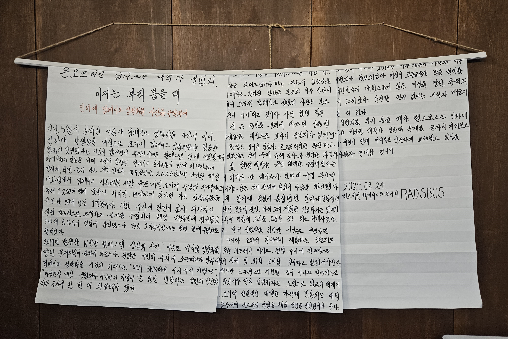

유성; 우리는 지워지지 않는다.
함께 싸워온 자매들에게 고마움을 담아, Dear. Sisters.
전시하였던 대자보와 해당 사건에 대한 설명글입니다.
강남역 여성 혐오 살인 사건
2016년 5월 17일, 강남역 10번 출구 쪽 여남공용 화장실에서 가해자 김성민이 여섯 명의 남성을 보낸 후 일곱 번째로 들어온 여성을 살해하는 사건이 발생했다. 가해자의 “여자들이 나를 무시해서 범행을 저질렀다”는 진술을 통해 범행 동기가 불특정 다수를 향한 여성 혐오였음이 드러났다. 이 사건으로 인해 여성혐오 범죄가 수면 위로 떠올랐으며 한국 사회의 경각심을 일깨우는 계기가 되었다. 또한 많은 여성들이 일상 속 불안과 차별에 목소리를 내기 시작했다.
전시 대자보 :『8주기 추모글 모음』- Dear. Sisters, RADSBOS, RAD-E, 한여름
미투 운동
2018년, 서지현 검사의 폭로로 촉발된 한국의 미투(#MeToo) 운동은 성폭력 피해자들이 침묵을 깨고 연대하며 가해 권력을 고발하는 계기가 되었다. 문화·정치·법조계·학교 등 사회 각층에서 성폭력 피해 증언이 이어졌고, 많은 유명 인사가 성범죄 가해자로 지목되었다. 미투 운동은 한국 사회의 뿌리 깊은 성차별과 권력형 성폭력 문제를 가시화했으며, 이후 ‘위드유(#WithYou)’ 운동과 함께 여성들이 서로를 지지하며 연대하는 흐름으로 발전했다. 하지만 가해자들에게 온전히 책임을 묻지 못하는 사법 체계와 2차 가해 문제는 여전히 해결되지 않은 과제로 남아 있다.
전시 대자보 :『너희는 들어라, 우리가 외친다』- Dear. Sisters
트랜스젠더 여대 입학 논란
2019년, 한 MTF 트랜스젠더의 숙명여자대학교 합격으로 여성 공간과 가부장제 구조에 대한 논의가 촉발되었다. 여자대학교는 여성에 대한 구조적 차별이 여전히 존재하는 사회에서, 여성이 주체적으로 성장할 수 있는 공간으로 기능해왔다. 그러나 트랜스젠더리즘의 ‘성별 선택’ 개념은 성별이 가부장제가 만든 억압 구조임을 흐리게 하며, 오히려 성역할을 지지함으로써 가부장제를 공고히하고 있다. 트랜스젠더의 입학에 대해 각종 페미니즘 단체에서 반대 서명을 내었으며, 이 사건은 여성들이 자신의 공간을 지키고 연대할 권리를 다시금 주장하는 계기가 되었다.
전시 대자보 :『트랜스젠더리즘으로 인해 역행하는 사회를 규탄한다』- SFA
N번방 사건
2020년, 텔레그램을 이용한 디지털 성범죄 조직 ‘N번방’과 ‘박사방’의 실체가 드러났다. 가해자들은 미성년자를 포함한 여성들을 협박해 성착취 영상을 제작하고 이를 유포하며 이익을 취했다. 해당 사건은 한국 사회에 디지털 성범죄의 심각성을 각인시켰으며, 이에 여성들은 ‘우리는 피해자가 아니다, 우리는 분노한다’라는 구호 아래 강력한 처벌을 요구했고 이후 '디지털 성범죄 근절법'이 강화되는 성과를 얻어냈다.
전시 대자보 :『우리는 아직 당신들을 지켜보고 있다』- Dear. Sisters
인하대 강간살인 사건
2022년 7월, 인하대학교에서 한 남학생이 같은 학교 여학생을 성폭행하려다 건물에서 추락해 숨지게 한 사건이 발생했다. 가해자는 피해자를 방치한 채 도망쳤으며, 경찰 조사에서 범행을 인정했으나 살인으로 인정되지 않았다. 이 사건은 한국 사회에서 ‘데이트 폭력’과 ‘성범죄 후 방치 살인’ 문제를 다시금 부각시켰고, 여성들이 일상적으로 겪는 위험에 대한 분노를 불러일으켰다. 피해자의 억울한 죽음 앞에서 여성들은 ‘우리는 언제까지 죽어야 하는가’라는 질문을 던지며 근본적인 사회 구조의 변화를 촉구했다.
전시 대자보 :『대학 내 성폭력 및 여성혐오 문화를 강력히 규탄한다』- SYNERGY
진주 편의점 사건
2023년 11월 4일, 경상남도 진주시의 한 편의점에서 20대 남성이 흉기를 들고 들어와 숏컷 여성 점원에게 폭행을 가한 사건이 발생했다. 가해자 강 씨는 편의점 점원에게 무차별 폭행을 가했고, 그 결과 피해자는 왼쪽 귀의 청력이 영구적으로 손상되었다. 범행 당시 가해자 남성은 “머리가 짧은 걸 보니 페미니스트”, “나는 남성연대인데 페미니스트는 좀 맞아야 한다”는 취지의 발언을 한 것으로 파악되어 이는 단순한 폭행 사건이 아닌 여성혐오 사건으로 밝혀졌다.
전시 대자보 :『들끓는 분노로 여성혐오를 규탄하며』- 해방
교제 폭력
2024년 5월 6일, 강남역 인근 고층 건물에서 20대 여성이 흉기에 찔린 채 살해당하는 사건이 벌어졌다. 가해자는 피해자의 남자친구로 피해자가 이별을 요구하자 범행을 결심했다고 밝혔다. 이와 비슷하게 헤어진 연인을 불러내 살인한 20대 남성, 결혼할 여자친구를 191회 찔러 살해한 20대 남성 등 교제 폭력으로 인한 사망 사건이 10년째 3일에 한 번 꼴로 일어나고 있다. 이러한 여성혐오에서 기인한 사건들에 대하여 사법부는 여전히 안일한 태도로 솜방망이 처벌만을 내리고 있다. 이와 관련해 각종 페미니즘 단체들에서는 '페미사이드'라는 이름으로 언론, 사법부, 경찰 등을 규탄하는 대자보를 게시하였다.
전시 대자보 :『우리는 운이 좋아서 살아남았다』- RADIUS
딥페이크 사건
2024년 8월 19일, MBC 뉴스데스크를 통해 딥페이크를 포함한 음란물을 주고받는 텔레그램 방의 존재가 보도되었다. 이는 인하대 졸업생 유 씨가 텔레그램 채팅방에 자신의 얼굴을 딥페이크로 합성한 음란물이 유포되고 있다는 인스타그램 DM을 받은 것을 계기로 유 씨뿐만 아니라 다른 이들도 범죄의 대상이 되었다는 사실이 수면 위로 드러났다. 해당 텔레그램 방에는 전국의 불특정 다수 천수백 명이 모여 있었으며 피해자들은 소속 대학별로 분류되어 있었다. 이 사건은 2020년 N번방 사건에서 해결되지 못하고 여전히 여성을 대상으로 하는 온라인 성범죄가 만연하다는 사실을 알리는 계기가 되었다.
전시 대자보 :『범죄자의 ‘기분권’만을 중시하는 대한민국에 여성의 안전은 없다』- Dear. Sisters :『온오프라인 넘나드는 대학가 성범죄, 이제는 뿌리 뽑을 때』- RADSBOS
서울여대 C교수 성범죄
2023년 7월, 서울여대 C교수가 제자들에게 부적절한 신체 접촉을 했다는 혐의로 신고가 접수되었다. 서울여대 인권센터 심의위원회는 교수의 행동이 성폭력이라 판단했음에도 불구하고 인사위원회에서 고작 감봉 3개월의 징계 처분을 내렸으며, C교수는 이후로도 서울여대에서 교수직을 유지했다. 해당 사건은 서울여대 래디컬 페미니즘 동아리 '무소의 뿔'에 의해 공론화되었으며, 각종 대자보와 학생 시위로 번졌다. 하지만 24년 10월 C교수가 대자보를 작성한 학생 3명을 ‘명예훼손죄’로 고소하면서 시위는 더 확대되었다. 사건에 대한 학교측의 대응 부족으로 인해 학생들은 여전히 학교와 싸우고 있다.
전시 대자보 :『서울여대는 당신의 룸살롱이 아니다』,『명예를 훼손한 자는 학생이 아니라 성범죄를 저지른 교수 자신이다』- 무소의 뿔
여대 공학 전환
2024년 11월, 동덕여대 학교 발전 계획 수립 과정에서 나온 여남 공학 전환 의제가 학생들에게 비공식적으로 알려진 뒤 이에 재학생들이 공학화에 반대하며 시위를 시작했다. 이후 동덕여대뿐만 아니라 성신여대에서도 외국인 남학생 입학 건이 밝혀지며 시위가 확산되었다. 이와 관련해 동덕여대 측은 여남 공학 전환이 학교 미래를 위한 여러 방안 중 하나일 뿐 확정된 사안이 아니라는 입장만 내비치며 학생들과 제대로 소통하지 않았다. 또한 성신여대의 경우 외국인 남학생 입학으로 그대로 추진하였다. 학생들은 이에 대해 반발하며 대자보 게시, 졸업장 반납, 서명 운동, 학잠 시위, 수업 거부 등 시위를 이어갔다.
전시 대자보 :『남학생은 남이다』- GPS :『살기 위해 외친다, 여자 대학은 여성이 지킨다』- SIREN :『여대는 아직 소명을 다하지 않았다』- 한여름 :『여성 공간을 침입하고 공격하는 한국형 인셀들, 여대에서조차 우리는 안전할 수 없다.』- RAD-E